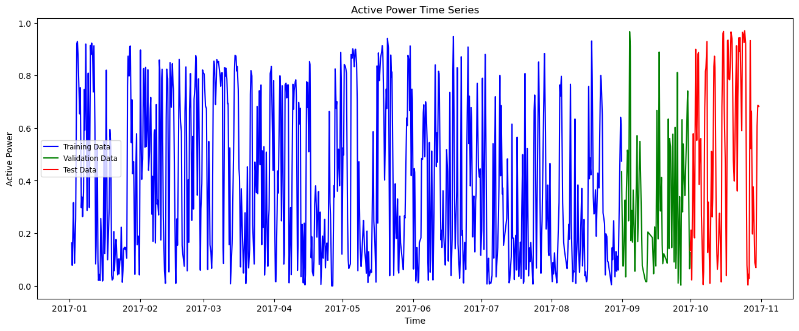
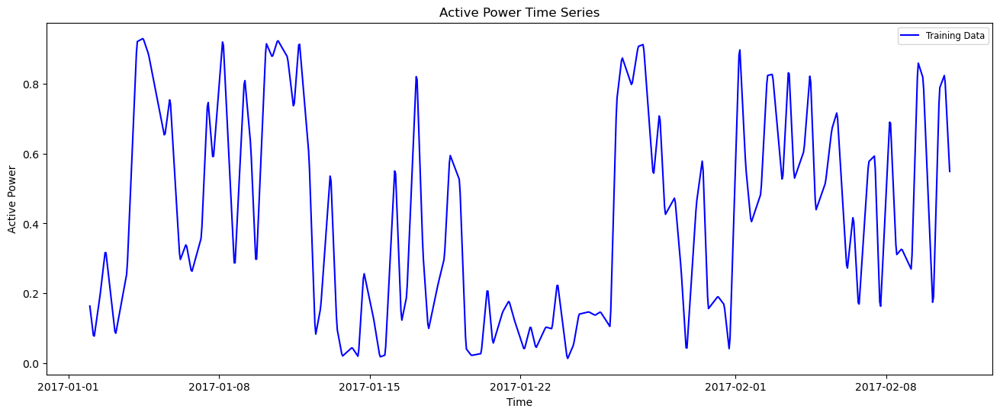
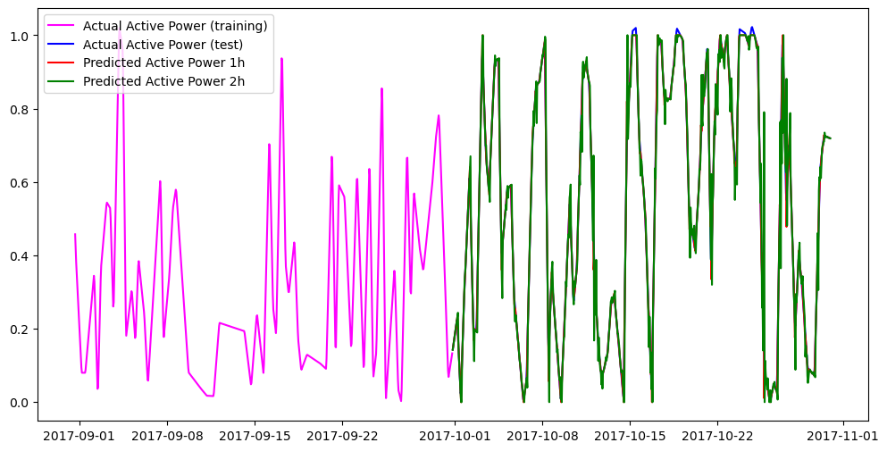
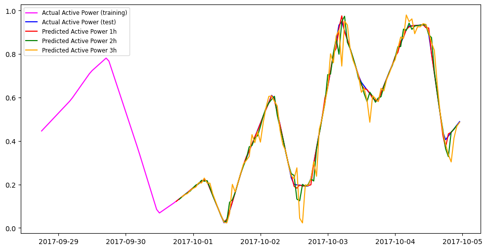

import pandas as pd
import numpy as np
import matplotlib.pyplot as plt
import time
import logging
from sklearn.preprocessing import MinMaxScaler
from sklearn.preprocessing import StandardScaler
from sklearn.model_selection import train_test_split
from sklearn.metrics import mean_absolute_error
N-HITS Forecasting with Nixtla’s NeuralForecast
Dataset: KaggleWPGD
This notebook demonstrates how to use the N-HITS forecasting model described in:
N-HiTS: Neural Hierarchical Interpolation for Time Series Forecasting, https://arxiv.org/abs/2201.12886
The implementation we use is provided by Nixtla’s NeuralForecast library:
Important note:
This notebook uses the following conda environments:
- Under linux: tfm_cc, described in the tfm_cc.yml file (see environments folder).
- Under macOS: tfm_cc_nixtla, described in the tfm_cc_nixtla.yml file (see environments folder).
Execution Notes:
The run times that appear below correspond to the execution of the notebook in a Linux machine under Ubuntu 22.04 LTS with Intel Core i7-10870H CPU (2.20GHz), 64GB of RAM, NVIDIA GeForce RTX 3060 Laptop GPU with 6Gb VRAM.
Load basic libraries
Warning: Model specific libraries will be loaded below.
Load dataset
The data in this notebook comes from the Kaggle dataset:
Wind Power Generation Data - Forecasting
file_path = "../../data/kaggleWPGD/Location1.csv"
df = pd.read_csv(file_path, delimiter=',')
df.head()| Time | temperature_2m | relativehumidity_2m | dewpoint_2m | windspeed_10m | windspeed_100m | winddirection_10m | winddirection_100m | windgusts_10m | Power | |
|---|---|---|---|---|---|---|---|---|---|---|
| 0 | 2017-01-02 00:00:00 | 28.5 | 85 | 24.5 | 1.44 | 1.26 | 146 | 162 | 1.4 | 0.1635 |
| 1 | 2017-01-02 01:00:00 | 28.4 | 86 | 24.7 | 2.06 | 3.99 | 151 | 158 | 4.4 | 0.1424 |
| 2 | 2017-01-02 02:00:00 | 26.8 | 91 | 24.5 | 1.30 | 2.78 | 148 | 150 | 3.2 | 0.1214 |
| 3 | 2017-01-02 03:00:00 | 27.4 | 88 | 24.3 | 1.30 | 2.69 | 58 | 105 | 1.6 | 0.1003 |
| 4 | 2017-01-02 04:00:00 | 27.3 | 88 | 24.1 | 2.47 | 4.43 | 58 | 84 | 4.0 | 0.0793 |
Set datetime format and index
df['time'] = pd.to_datetime(df['Time'], format='%Y-%m-%d %H:%M:00')
df.drop(columns=['Time'], inplace=True)
df.set_index('time', inplace=True)
df.head()| temperature_2m | relativehumidity_2m | dewpoint_2m | windspeed_10m | windspeed_100m | winddirection_10m | winddirection_100m | windgusts_10m | Power | |
|---|---|---|---|---|---|---|---|---|---|
| time | |||||||||
| 2017-01-02 00:00:00 | 28.5 | 85 | 24.5 | 1.44 | 1.26 | 146 | 162 | 1.4 | 0.1635 |
| 2017-01-02 01:00:00 | 28.4 | 86 | 24.7 | 2.06 | 3.99 | 151 | 158 | 4.4 | 0.1424 |
| 2017-01-02 02:00:00 | 26.8 | 91 | 24.5 | 1.30 | 2.78 | 148 | 150 | 3.2 | 0.1214 |
| 2017-01-02 03:00:00 | 27.4 | 88 | 24.3 | 1.30 | 2.69 | 58 | 105 | 1.6 | 0.1003 |
| 2017-01-02 04:00:00 | 27.3 | 88 | 24.1 | 2.47 | 4.43 | 58 | 84 | 4.0 | 0.0793 |
df.info()<class 'pandas.core.frame.DataFrame'>
DatetimeIndex: 43800 entries, 2017-01-02 00:00:00 to 2021-12-31 23:00:00
Data columns (total 9 columns):
# Column Non-Null Count Dtype
--- ------ -------------- -----
0 temperature_2m 43800 non-null float64
1 relativehumidity_2m 43800 non-null int64
2 dewpoint_2m 43800 non-null float64
3 windspeed_10m 43800 non-null float64
4 windspeed_100m 43800 non-null float64
5 winddirection_10m 43800 non-null int64
6 winddirection_100m 43800 non-null int64
7 windgusts_10m 43800 non-null float64
8 Power 43800 non-null float64
dtypes: float64(6), int64(3)
memory usage: 3.3 MBSelect a subset of the data
df = df.head(7248)Rename the columns
initial_columns = df.columns.tolist()
initial_columns['temperature_2m',
'relativehumidity_2m',
'dewpoint_2m',
'windspeed_10m',
'windspeed_100m',
'winddirection_10m',
'winddirection_100m',
'windgusts_10m',
'Power']df.rename(columns={'Power' : 'Active_Power', 'windspeed_10m' : 'Wind_speed_tower'}, inplace=True)
df = df[['Active_Power', 'Wind_speed_tower']]
df| Active_Power | Wind_speed_tower | |
|---|---|---|
| time | ||
| 2017-01-02 00:00:00 | 0.1635 | 1.44 |
| 2017-01-02 01:00:00 | 0.1424 | 2.06 |
| 2017-01-02 02:00:00 | 0.1214 | 1.30 |
| 2017-01-02 03:00:00 | 0.1003 | 1.30 |
| 2017-01-02 04:00:00 | 0.0793 | 2.47 |
| ... | ... | ... |
| 2017-10-30 19:00:00 | 0.6847 | 5.89 |
| 2017-10-30 20:00:00 | 0.6841 | 6.32 |
| 2017-10-30 21:00:00 | 0.6834 | 6.52 |
| 2017-10-30 22:00:00 | 0.6828 | 6.33 |
| 2017-10-30 23:00:00 | 0.6822 | 6.15 |
7248 rows × 2 columns
Check for missing values and duplicated dates
There are no missing data in this dataset
print(df.isna().sum())Active_Power 0
Wind_speed_tower 0
dtype: int64duplicate_dates = df.index[df.index.duplicated(keep='first')]
print(f"Number of duplicate timestamps: {len(duplicate_dates)}")
print(duplicate_dates)Number of duplicate timestamps: 0
DatetimeIndex([], dtype='datetime64[ns]', name='time', freq=None)expected = pd.date_range(start=df.index.min(), end=df.index.max(), freq='h')
missing = expected.difference(df.index)
print("Missing timestamps:", missing)
Missing timestamps: DatetimeIndex([], dtype='datetime64[ns]', freq='h')missing_df = pd.DataFrame({'missing':missing})
missing_df['date'] = missing_df['missing'].dt.date
missing_df.value_counts('date').sort_index()Series([], Name: count, dtype: int64)Target and exogenous variables
target = 'Active_Power'
features = [col for col in df.columns if col != target]
features = features[:1]
features['Wind_speed_tower']df = df[features + [target]]
df| Wind_speed_tower | Active_Power | |
|---|---|---|
| time | ||
| 2017-01-02 00:00:00 | 1.44 | 0.1635 |
| 2017-01-02 01:00:00 | 2.06 | 0.1424 |
| 2017-01-02 02:00:00 | 1.30 | 0.1214 |
| 2017-01-02 03:00:00 | 1.30 | 0.1003 |
| 2017-01-02 04:00:00 | 2.47 | 0.0793 |
| ... | ... | ... |
| 2017-10-30 19:00:00 | 5.89 | 0.6847 |
| 2017-10-30 20:00:00 | 6.32 | 0.6841 |
| 2017-10-30 21:00:00 | 6.52 | 0.6834 |
| 2017-10-30 22:00:00 | 6.33 | 0.6828 |
| 2017-10-30 23:00:00 | 6.15 | 0.6822 |
7248 rows × 2 columns
Train / Validation / Test split
We select the following lengths for the train, validation, and test sets:
int(np.ceil(df.shape[0] * 0.8))5799train_len = 5800 # approx int(np.ceil(df.shape[0] * 0.8))
print(f"Train length: {train_len}")
val_len = (df.shape[0] - train_len) // 2
print(f"Validation length: {val_len}")
test_len = df.shape[0] - train_len - val_len
print(f"Test length: {test_len}")Train length: 5800
Validation length: 724
Test length: 724And we split the time series into train, validation, and test sets:
train_df = df.iloc[:train_len]
train_df| Wind_speed_tower | Active_Power | |
|---|---|---|
| time | ||
| 2017-01-02 00:00:00 | 1.44 | 0.1635 |
| 2017-01-02 01:00:00 | 2.06 | 0.1424 |
| 2017-01-02 02:00:00 | 1.30 | 0.1214 |
| 2017-01-02 03:00:00 | 1.30 | 0.1003 |
| 2017-01-02 04:00:00 | 2.47 | 0.0793 |
| ... | ... | ... |
| 2017-08-31 11:00:00 | 4.83 | 0.6155 |
| 2017-08-31 12:00:00 | 5.15 | 0.5935 |
| 2017-08-31 13:00:00 | 5.47 | 0.5536 |
| 2017-08-31 14:00:00 | 5.61 | 0.5137 |
| 2017-08-31 15:00:00 | 5.79 | 0.4738 |
5800 rows × 2 columns
val_df = df.iloc[train_len:(train_len + val_len)]
val_df| Wind_speed_tower | Active_Power | |
|---|---|---|
| time | ||
| 2017-08-31 16:00:00 | 5.87 | 0.4339 |
| 2017-08-31 17:00:00 | 5.19 | 0.3940 |
| 2017-08-31 18:00:00 | 4.26 | 0.3605 |
| 2017-08-31 19:00:00 | 2.21 | 0.3334 |
| 2017-08-31 20:00:00 | 2.55 | 0.3063 |
| ... | ... | ... |
| 2017-09-30 15:00:00 | 2.12 | 0.0907 |
| 2017-09-30 16:00:00 | 2.42 | 0.0991 |
| 2017-09-30 17:00:00 | 2.10 | 0.1076 |
| 2017-09-30 18:00:00 | 2.20 | 0.1166 |
| 2017-09-30 19:00:00 | 1.97 | 0.1262 |
724 rows × 2 columns
test_df = df.iloc[(train_len + val_len):]
test_df| Wind_speed_tower | Active_Power | |
|---|---|---|
| time | ||
| 2017-09-30 20:00:00 | 1.80 | 0.1357 |
| 2017-09-30 21:00:00 | 1.71 | 0.1453 |
| 2017-09-30 22:00:00 | 1.44 | 0.1548 |
| 2017-09-30 23:00:00 | 1.40 | 0.1644 |
| 2017-10-01 00:00:00 | 2.20 | 0.1739 |
| ... | ... | ... |
| 2017-10-30 19:00:00 | 5.89 | 0.6847 |
| 2017-10-30 20:00:00 | 6.32 | 0.6841 |
| 2017-10-30 21:00:00 | 6.52 | 0.6834 |
| 2017-10-30 22:00:00 | 6.33 | 0.6828 |
| 2017-10-30 23:00:00 | 6.15 | 0.6822 |
724 rows × 2 columns
Time series split visualization
plt.figure(figsize=(16, 6))
plt.plot(train_df["Active_Power"], label="Training Data", color='blue')
plt.plot(val_df["Active_Power"], label="Validation Data", color='green')
plt.plot(test_df["Active_Power"], label="Test Data", color='red')
plt.title("Active Power Time Series")
plt.xlabel("Time")
plt.ylabel("Active Power")
plt.legend(fontsize='small')<matplotlib.legend.Legend at 0x73baf6c55a20>
plt.figure(figsize=(16, 6))
plt.plot(train_df["Active_Power"].head(960), label="Training Data", color='blue')
# plt.plot(val_df["Active_Power"].head(240), label="Validation Data", color='green')
# plt.plot(test_df["Active_Power"], label="Test Data", color='red')
plt.title("Active Power Time Series")
plt.xlabel("Time")
plt.ylabel("Active Power")
plt.legend(fontsize='small')<matplotlib.legend.Legend at 0x73baf631bfa0>
We will also create copies of the train, validation, and test sets to use them later in the notebook.
train_df_original = train_df.copy()
val_df_original = val_df.copy()
test_df_original = test_df.copy()Data scaling
We apply the min-max scaler fitted to the training set to the train, validation, and test sets (to avoid data leakage).
from sklearn.preprocessing import MinMaxScaler
scaler = MinMaxScaler()
scaler.set_output(transform='pandas')
scaler.fit(train_df)
train_df = scaler.transform(train_df)
val_df = scaler.transform(val_df)
test_df = scaler.transform(test_df)Let us check the result
train_df.describe().transpose()| count | mean | std | min | 25% | 50% | 75% | max | |
|---|---|---|---|---|---|---|---|---|
| Wind_speed_tower | 5800.0 | 0.275745 | 0.127310 | 0.0 | 0.184488 | 0.249247 | 0.348645 | 1.0 |
| Active_Power | 5800.0 | 0.407862 | 0.287194 | 0.0 | 0.149394 | 0.349394 | 0.669188 | 1.0 |
Nixtla Dataset Format
Convert to NeuralForecast format (ds, y, unique_id)
train_df_nf = train_df.copy()
train_df_nf = train_df_nf.rename(columns={target: 'y'})
train_df_nf['ds'] = train_df_nf.index
train_df_nf['unique_id'] = 'series_1'Move ds and unique_id to front
train_df_nf = train_df_nf[['unique_id', 'ds', 'y'] + features]
train_df_nf| unique_id | ds | y | Wind_speed_tower | |
|---|---|---|---|---|
| time | ||||
| 2017-01-02 00:00:00 | series_1 | 2017-01-02 00:00:00 | 0.172377 | 0.108434 |
| 2017-01-02 01:00:00 | series_1 | 2017-01-02 01:00:00 | 0.150132 | 0.155120 |
| 2017-01-02 02:00:00 | series_1 | 2017-01-02 02:00:00 | 0.127992 | 0.097892 |
| 2017-01-02 03:00:00 | series_1 | 2017-01-02 03:00:00 | 0.105746 | 0.097892 |
| 2017-01-02 04:00:00 | series_1 | 2017-01-02 04:00:00 | 0.083606 | 0.185994 |
| ... | ... | ... | ... | ... |
| 2017-08-31 11:00:00 | series_1 | 2017-08-31 11:00:00 | 0.648919 | 0.363705 |
| 2017-08-31 12:00:00 | series_1 | 2017-08-31 12:00:00 | 0.625725 | 0.387801 |
| 2017-08-31 13:00:00 | series_1 | 2017-08-31 13:00:00 | 0.583658 | 0.411898 |
| 2017-08-31 14:00:00 | series_1 | 2017-08-31 14:00:00 | 0.541592 | 0.422440 |
| 2017-08-31 15:00:00 | series_1 | 2017-08-31 15:00:00 | 0.499526 | 0.435994 |
5800 rows × 4 columns
Same for validation and test sets
val_df_nf = val_df.copy()
val_df_nf = val_df_nf.rename(columns={target: 'y'})
val_df_nf['ds'] = val_df_nf.index
val_df_nf['unique_id'] = 'series_1'
val_df_nf = val_df_nf[['unique_id', 'ds', 'y'] + features]
val_df_nf| unique_id | ds | y | Wind_speed_tower | |
|---|---|---|---|---|
| time | ||||
| 2017-08-31 16:00:00 | series_1 | 2017-08-31 16:00:00 | 0.457459 | 0.442018 |
| 2017-08-31 17:00:00 | series_1 | 2017-08-31 17:00:00 | 0.415393 | 0.390813 |
| 2017-08-31 18:00:00 | series_1 | 2017-08-31 18:00:00 | 0.380074 | 0.320783 |
| 2017-08-31 19:00:00 | series_1 | 2017-08-31 19:00:00 | 0.351502 | 0.166416 |
| 2017-08-31 20:00:00 | series_1 | 2017-08-31 20:00:00 | 0.322931 | 0.192018 |
| ... | ... | ... | ... | ... |
| 2017-09-30 15:00:00 | series_1 | 2017-09-30 15:00:00 | 0.095625 | 0.159639 |
| 2017-09-30 16:00:00 | series_1 | 2017-09-30 16:00:00 | 0.104481 | 0.182229 |
| 2017-09-30 17:00:00 | series_1 | 2017-09-30 17:00:00 | 0.113442 | 0.158133 |
| 2017-09-30 18:00:00 | series_1 | 2017-09-30 18:00:00 | 0.122931 | 0.165663 |
| 2017-09-30 19:00:00 | series_1 | 2017-09-30 19:00:00 | 0.133052 | 0.148343 |
724 rows × 4 columns
test_df_nf = test_df.copy()
test_df_nf = test_df_nf.rename(columns={target: 'y'})
test_df_nf['ds'] = test_df_nf.index
test_df_nf['unique_id'] = 'series_1'
test_df_nf = test_df_nf[['unique_id', 'ds', 'y'] + features]
test_df_nf| unique_id | ds | y | Wind_speed_tower | |
|---|---|---|---|---|
| time | ||||
| 2017-09-30 20:00:00 | series_1 | 2017-09-30 20:00:00 | 0.143068 | 0.135542 |
| 2017-09-30 21:00:00 | series_1 | 2017-09-30 21:00:00 | 0.153189 | 0.128765 |
| 2017-09-30 22:00:00 | series_1 | 2017-09-30 22:00:00 | 0.163205 | 0.108434 |
| 2017-09-30 23:00:00 | series_1 | 2017-09-30 23:00:00 | 0.173326 | 0.105422 |
| 2017-10-01 00:00:00 | series_1 | 2017-10-01 00:00:00 | 0.183342 | 0.165663 |
| ... | ... | ... | ... | ... |
| 2017-10-30 19:00:00 | series_1 | 2017-10-30 19:00:00 | 0.721877 | 0.443524 |
| 2017-10-30 20:00:00 | series_1 | 2017-10-30 20:00:00 | 0.721244 | 0.475904 |
| 2017-10-30 21:00:00 | series_1 | 2017-10-30 21:00:00 | 0.720506 | 0.490964 |
| 2017-10-30 22:00:00 | series_1 | 2017-10-30 22:00:00 | 0.719873 | 0.476657 |
| 2017-10-30 23:00:00 | series_1 | 2017-10-30 23:00:00 | 0.719241 | 0.463102 |
724 rows × 4 columns
Create a joint dataset with train and validation to fit into Nixtla’s framework.
train_val_df = pd.concat([train_df_nf, val_df_nf], axis=0)
train_val_df.reset_index(drop=True, inplace=True)
train_val_df.info()<class 'pandas.core.frame.DataFrame'>
RangeIndex: 6524 entries, 0 to 6523
Data columns (total 4 columns):
# Column Non-Null Count Dtype
--- ------ -------------- -----
0 unique_id 6524 non-null object
1 ds 6524 non-null datetime64[ns]
2 y 6524 non-null float64
3 Wind_speed_tower 6524 non-null float64
dtypes: datetime64[ns](1), float64(2), object(1)
memory usage: 204.0+ KBAnd similarly a full dataset with train, validation and test sets.
full_df_nf = pd.concat([train_df_nf, val_df_nf, test_df_nf], axis=0)
full_df_nf.reset_index(drop=True, inplace=True)
full_df_nf.info()<class 'pandas.core.frame.DataFrame'>
RangeIndex: 7248 entries, 0 to 7247
Data columns (total 4 columns):
# Column Non-Null Count Dtype
--- ------ -------------- -----
0 unique_id 7248 non-null object
1 ds 7248 non-null datetime64[ns]
2 y 7248 non-null float64
3 Wind_speed_tower 7248 non-null float64
dtypes: datetime64[ns](1), float64(2), object(1)
memory usage: 226.6+ KBSet the forecast horizon and input length
horizon = 3
input_size = 6AutoNHits
Our first step is to fit the auto model, which automatically selects the best hyperparameters for the model using Optuna as optimization framework.
import logging
import optuna
# import ray.tune as tune
import torch
from neuralforecast import NeuralForecast
from neuralforecast.losses.pytorch import MAE
from neuralforecast.models import NHITS
from neuralforecast import NeuralForecastoptuna.logging.set_verbosity(optuna.logging.WARNING)
logging.getLogger('pytorch_lightning').setLevel(logging.ERROR)
torch.set_float32_matmul_precision('high')Check if CUDA is available (Linux machines)
if torch.cuda.is_available():
print(torch.cuda.device_count(), torch.cuda.current_device(),torch.cuda.get_device_name(0))1 0 NVIDIA GeForce RTX 3060 Laptop GPUOptuna for hyperparameter tuning
Define the objective function along with the hyperparameter space.
from neuralforecast.models import NHITS%%capture
logging.getLogger("lightning_fabric.utilities.seed").setLevel(logging.WARNING)
start_time = time.time()
model = NHITS(
activation='Sigmoid',
h=horizon,
hist_exog_list = ['Wind_speed_tower'],
scaler_type='standard',
input_size=input_size,
loss=MAE(),
max_steps=300,
random_seed=42,
# **best_params
stack_types = ['identity', 'identity', 'identity', 'identity'],
n_blocks = [4, 1, 1, 1],
mlp_units = [[512, 512], [512, 512], [512, 512], [512, 512]],
n_pool_kernel_size = [2, 2, 2, 1],
n_freq_downsample = [8, 4, 2, 1],
enable_progress_bar=False
)
nf = NeuralForecast(models=[model], freq='H')
nf.fit(df=train_val_df)
end_time = time.time()2025-06-17 20:57:02.187804: E external/local_xla/xla/stream_executor/cuda/cuda_fft.cc:477] Unable to register cuFFT factory: Attempting to register factory for plugin cuFFT when one has already been registered
WARNING: All log messages before absl::InitializeLog() is called are written to STDERR
E0000 00:00:1750186622.203289 22413 cuda_dnn.cc:8310] Unable to register cuDNN factory: Attempting to register factory for plugin cuDNN when one has already been registered
E0000 00:00:1750186622.207889 22413 cuda_blas.cc:1418] Unable to register cuBLAS factory: Attempting to register factory for plugin cuBLAS when one has already been registered
2025-06-17 20:57:02.222022: I tensorflow/core/platform/cpu_feature_guard.cc:210] This TensorFlow binary is optimized to use available CPU instructions in performance-critical operations.
To enable the following instructions: AVX2 FMA, in other operations, rebuild TensorFlow with the appropriate compiler flags.elapsed_time = end_time - start_time
print(f"⏱️ Elapsed time: {elapsed_time / 60:.2f} minutes")⏱️ Elapsed time: 0.13 minutes# %%capture
# %%time
# cv_df = nf.cross_validation(train_val_df, n_windows=20, step_size=h, verbose=1, refit=True)
# cv_df# from sklearn.metrics import mean_absolute_error as sk_MAE
# grouped_mae = cv_df.groupby("cutoff").apply(lambda g: sk_MAE(g["NHITS"], g["y"])).reset_index(name="mae")
# grouped_mae
# grouped_mae['mae'].mean()from neuralforecast.losses.pytorch import MAE
def create_model(trial: optuna.trial.Trial):
print(f"----------------------------------")
print(f"Creating model with trial number: {trial.number}")
n_stacks = trial.suggest_int("num_stacks", 1, 4)
print(f"Number of stacks: {n_stacks}")
mlp_choices = [[64, 64], [128, 128], [256, 256], [512, 512]]
n_blocks =[trial.suggest_int(f"num_blocks_stck_{i}", 1, 4) for i in range(n_stacks)]
print(f"Number of blocks per stack: {n_blocks}")
mlp_units = [trial.suggest_categorical("mlp_units", mlp_choices) for _ in range(n_stacks)]
print(f"MLP units per stack: {mlp_units}")
model = NHITS(
activation='Sigmoid',
h=horizon,
hist_exog_list = ['Wind_speed_tower'],
scaler_type='standard',
input_size=input_size,
loss=MAE(),
max_steps=300,
random_seed=42,
#################
# print(f"Number of stacks: {Num_stacks}")
stack_types = ['identity'] * n_stacks,
n_blocks = n_blocks,
# mlp_units = [[512, 512] for _ in range(n_stacks)],
mlp_units = mlp_units,
n_pool_kernel_size = [2] * (n_stacks - 1) + [1],
n_freq_downsample = [2**k for k in range(n_stacks - 1, -1, -1)])
# learning_rate = trial.suggest_float("learning_rate", 1e-4, 1e-2, log=True)
return modeldef objective(trial):
model = create_model(trial)
nf = NeuralForecast(models=[model], freq='H')
print("Entering CV")
cv_df = nf.cross_validation(train_val_df, n_windows=10, step_size=horizon, verbose=2, refit=True)
print("Exiting CV")
print(f"----------------------------------")
# norm_pred = ((cv_df["NHITS"] - np.min(cv_df["NHITS"])) / (np.max(cv_df["NHITS"]) - np.min(cv_df["NHITS"])))
# return (norm_pred - cv_df["y"]).abs().mean()
# winsor_pred = np.clip(norm_pred, 0, 1)
# return (winsor_pred - cv_df["y"]).abs().mean()
return (cv_df["NHITS"] - cv_df["y"]).abs().mean()Initiate a study object via the create_study() function.
study = optuna.create_study(direction='minimize')Perform hyperparameter tuning by calling the optimize() method on the study object.
%%capture
logging.getLogger("lightning_fabric.utilities.seed").setLevel(logging.WARNING)
start_time = time.time()
study.optimize(objective, n_trials=100, n_jobs=1)
end_time = time.time()elapsed_time = end_time - start_time
print(f"⏱️ Elapsed time: {elapsed_time / 60:.2f} minutes")⏱️ Elapsed time: 74.71 minutesbest_params = study.best_params
best_params{'num_stacks': 1, 'num_blocks_stck_0': 3, 'mlp_units': [512, 512]}# DONE
n_stacks = best_params['num_stacks']
print(f"Number of stacks: {n_stacks}")
n_blocks = [best_params[f'num_blocks_stck_{i}'] for i in range(n_stacks)]
print(f"Number of blocks per stack: {n_blocks}")
mlp_units = [best_params['mlp_units'] for _ in range(n_stacks)]
print(f"MLP units per stack: {mlp_units}")Number of stacks: 1
Number of blocks per stack: [3]
MLP units per stack: [[512, 512]]NHits modeling
Using the best hyperparameters we can now fit a final model. This is done by passing the best hyperparameters to the model and then fitting it to the training + validation set.
%%capture
model = NHITS(
activation='Sigmoid',
h=horizon,
hist_exog_list = ['Wind_speed_tower'],
scaler_type='standard',
input_size=input_size,
loss=MAE(),
max_steps=300,
random_seed=42,
# **best_params
stack_types = ['identity'] * n_stacks,
enable_progress_bar=True,
mlp_units = mlp_units,
n_blocks = n_blocks,
n_pool_kernel_size = [2] * (n_stacks - 1) + [1],
n_freq_downsample = [2**k for k in range(n_stacks - 1, -1, -1)])
nf = NeuralForecast(models=[model], freq='H')
nf.fit(df=train_val_df, verbose=True)Model Performance Evaluation
We create the rolling_df dataframe that contains the series data up to the time instant in which we make a prediction that corresponds to the first time instant in the test set. That prediction corresponds to the maximum value of the prediction horizon.
rolling_df = full_df_nf.iloc[:(train_len + val_len + 1 - horizon)]
rolling_df.tail(2)| unique_id | ds | y | Wind_speed_tower | |
|---|---|---|---|---|
| 6520 | series_1 | 2017-09-30 16:00:00 | 0.104481 | 0.182229 |
| 6521 | series_1 | 2017-09-30 17:00:00 | 0.113442 | 0.158133 |
Now to start the evaluation we fit the model to this dataset and get the predictions. We will not use all of them, only the last.
%%capture
logging.getLogger("lightning_fabric.utilities.seed").setLevel(logging.WARNING)
nf.fit(df=rolling_df)%%capture
rolling_preds = nf.predict()rolling_preds| unique_id | ds | NHITS | |
|---|---|---|---|
| 0 | series_1 | 2017-09-30 18:00:00 | 0.122224 |
| 1 | series_1 | 2017-09-30 19:00:00 | 0.131415 |
| 2 | series_1 | 2017-09-30 20:00:00 | 0.139566 |
Note the last of these predictions corresponds to the first time instant in the test set.
Now we create a dictionary (of dataframes) to store the predictions for each value k from 1 to the max of the prediction horizon. The weird (k-1):k bit below is to prevent pandas from collapsing the row into a series!
preds_df = {}
for k in range(1, horizon + 1):
preds_df_name = str(k) + "h" # String variable for the new name
preds_df[preds_df_name] = rolling_preds.copy().iloc[(k-1):k, :]
Initially we store the predictions we obtained above in the dictionary (only the last one of these will actually be useful for comparison with the test set, but the others serve the purpose of dictionary initialisation).
preds_df['1h']| unique_id | ds | NHITS | |
|---|---|---|---|
| 0 | series_1 | 2017-09-30 18:00:00 | 0.122224 |
preds_df['2h']| unique_id | ds | NHITS | |
|---|---|---|---|
| 1 | series_1 | 2017-09-30 19:00:00 | 0.131415 |
preds_df['3h']| unique_id | ds | NHITS | |
|---|---|---|---|
| 2 | series_1 | 2017-09-30 20:00:00 | 0.139566 |
The main tool for evaluation is the for loop below. In each iteration we add one time instant to the rolling_df dataframe and then we fit the model to this dataframe. We then obtain the predictions for this augmented dataset and our forecasting horizon. And we store each of them in the corresponing dataframe inside the dictionary.
%%capture
logging.getLogger("lightning_fabric.utilities.seed").setLevel(logging.WARNING)
start_time = time.time()
# for k in range(2, 50): # for testing
for k in range(2, len(test_df_nf) + horizon):
# rolling_df = pd.concat([train_df_nf, val_df_nf, test_df_nf.iloc[:k]])
rolling_df = full_df_nf.iloc[:(train_len + val_len + k - horizon)]
# print(rolling_df.tail(1))
# print(rolling_df.shape)
nf.fit(df=rolling_df)
rolling_preds = nf.predict()
# print(rolling_preds)
for h in range(1, horizon + 1):
preds_df[f'{h}h'] = pd.concat([preds_df[f'{h}h'], rolling_preds.iloc[(h - 1):h,:]], axis=0)
print(f"k = {k}")
print("#" * 20)
end_time = time.time()print(f"⏱️ Elapsed time: {elapsed_time / 60:.2f} minutes")⏱️ Elapsed time: 74.71 minutesFor ease of comparison and plotting we reindex the predictions dataframes in the dictionary to use ds as index.
for h in range(1, horizon + 1):
preds_df[f'{h}h'].set_index('ds', inplace=True)After doing that they look like this:
preds_df['1h']['NHITS'] = np.clip(preds_df['1h']['NHITS'], 0, 1) preds_df['2h']['NHITS'] = np.clip(preds_df['2h']['NHITS'], 0, 1)preds_df['3h']['NHITS'] = np.clip(preds_df['3h']['NHITS'], 0, 1)# test_df_nf.tail(3)Let us plot the predictions against the test set values.
%matplotlib inline
plt.figure(figsize=(12, 6))
# plt.plot(val_df_nf["y"].tail(20), label="Actual Active Power (training)", color='magenta')
# plt.plot(test_df_nf["y"].head(20), label="Actual Active Power (test)", color='blue')
plt.plot(val_df_nf["y"], label="Actual Active Power (training)", color='magenta')
plt.plot(test_df_nf["y"], label="Actual Active Power (test)", color='blue')
plt.plot(preds_df['1h']['NHITS'][2:], label="Predicted Active Power 1h", color='red')
plt.plot(preds_df['2h']['NHITS'][1:], label="Predicted Active Power 2h", color='green')
# plt.plot(preds_df['3h']['NHITS'], label="Predicted Active Power 3h", color='orange')
plt.legend()
plt.show();plt.close()
%matplotlib inline
plt.figure(figsize=(12, 6))
# plt.plot(val_df_nf["y"].tail(20), label="Actual Active Power (training)", color='magenta')
# plt.plot(test_df_nf["y"].head(20), label="Actual Active Power (test)", color='blue')
plt.plot(val_df_nf["y"].tail(50), label="Actual Active Power (training)", color='magenta')
plt.plot(test_df_nf["y"].head(100), label="Actual Active Power (test)", color='blue')
plt.plot(preds_df['1h']['NHITS'].head(100), label="Predicted Active Power 1h", color='red')
plt.plot(preds_df['2h']['NHITS'].head(100), label="Predicted Active Power 2h", color='green')
plt.plot(preds_df['3h']['NHITS'].head(100), label="Predicted Active Power 3h", color='orange')
plt.legend(fontsize='small')
plt.show();plt.close()
MAE computation
We will next compute the MAE for each of the predictions in the dictionary. The trickiest part here is to ensure that the predictions are aligned with the test set.
from sklearn.metrics import mean_absolute_errortest_df_nf.index.min(), test_df_nf.index.max()(Timestamp('2017-09-30 20:00:00'), Timestamp('2017-10-30 23:00:00'))test_df_nf['Wind_speed_tower']time
2017-09-30 20:00:00 0.135542
2017-09-30 21:00:00 0.128765
2017-09-30 22:00:00 0.108434
2017-09-30 23:00:00 0.105422
2017-10-01 00:00:00 0.165663
...
2017-10-30 19:00:00 0.443524
2017-10-30 20:00:00 0.475904
2017-10-30 21:00:00 0.490964
2017-10-30 22:00:00 0.476657
2017-10-30 23:00:00 0.463102
Name: Wind_speed_tower, Length: 724, dtype: float64mae1h_df = preds_df['1h'].copy()[2:][['NHITS']]
mae1h_df| NHITS | |
|---|---|
| ds | |
| 2017-09-30 20:00:00 | 0.143255 |
| 2017-09-30 21:00:00 | 0.152949 |
| 2017-09-30 22:00:00 | 0.161771 |
| 2017-09-30 23:00:00 | 0.174423 |
| 2017-10-01 00:00:00 | 0.184522 |
| ... | ... |
| 2017-10-30 19:00:00 | 0.721681 |
| 2017-10-30 20:00:00 | 0.721199 |
| 2017-10-30 21:00:00 | 0.720640 |
| 2017-10-30 22:00:00 | 0.719790 |
| 2017-10-30 23:00:00 | 0.719289 |
724 rows × 1 columns
We need to add the exogenous variables as they were used by the scaler.
mae1h_df.insert(0, 'Wind_speed_tower', test_df_nf['Wind_speed_tower'].values)
mae1h_df| Wind_speed_tower | NHITS | |
|---|---|---|
| ds | ||
| 2017-09-30 20:00:00 | 0.135542 | 0.143255 |
| 2017-09-30 21:00:00 | 0.128765 | 0.152949 |
| 2017-09-30 22:00:00 | 0.108434 | 0.161771 |
| 2017-09-30 23:00:00 | 0.105422 | 0.174423 |
| 2017-10-01 00:00:00 | 0.165663 | 0.184522 |
| ... | ... | ... |
| 2017-10-30 19:00:00 | 0.443524 | 0.721681 |
| 2017-10-30 20:00:00 | 0.475904 | 0.721199 |
| 2017-10-30 21:00:00 | 0.490964 | 0.720640 |
| 2017-10-30 22:00:00 | 0.476657 | 0.719790 |
| 2017-10-30 23:00:00 | 0.463102 | 0.719289 |
724 rows × 2 columns
# mae1h_df.columns = ["Wind_speed_tower", "Active_Power"]
mean_absolute_error(scaler.inverse_transform(mae1h_df)[:,1], test_df_original["Active_Power"])0.006674091426698358Mae for 2h preddictions
mae2h_df = preds_df['2h'].copy()[1:][:-1][['NHITS']]
mae2h_df| NHITS | |
|---|---|
| ds | |
| 2017-09-30 20:00:00 | 0.142033 |
| 2017-09-30 21:00:00 | 0.152502 |
| 2017-09-30 22:00:00 | 0.161576 |
| 2017-09-30 23:00:00 | 0.169637 |
| 2017-10-01 00:00:00 | 0.184456 |
| ... | ... |
| 2017-10-30 19:00:00 | 0.721748 |
| 2017-10-30 20:00:00 | 0.720069 |
| 2017-10-30 21:00:00 | 0.720531 |
| 2017-10-30 22:00:00 | 0.720106 |
| 2017-10-30 23:00:00 | 0.719239 |
724 rows × 1 columns
mae2h_df.insert(0, 'Wind_speed_tower', test_df_nf['Wind_speed_tower'].values)
mae2h_df| Wind_speed_tower | NHITS | |
|---|---|---|
| ds | ||
| 2017-09-30 20:00:00 | 0.135542 | 0.142033 |
| 2017-09-30 21:00:00 | 0.128765 | 0.152502 |
| 2017-09-30 22:00:00 | 0.108434 | 0.161576 |
| 2017-09-30 23:00:00 | 0.105422 | 0.169637 |
| 2017-10-01 00:00:00 | 0.165663 | 0.184456 |
| ... | ... | ... |
| 2017-10-30 19:00:00 | 0.443524 | 0.721748 |
| 2017-10-30 20:00:00 | 0.475904 | 0.720069 |
| 2017-10-30 21:00:00 | 0.490964 | 0.720531 |
| 2017-10-30 22:00:00 | 0.476657 | 0.720106 |
| 2017-10-30 23:00:00 | 0.463102 | 0.719239 |
724 rows × 2 columns
# mae1h_df.columns = ["Wind_speed_tower", "Active_Power"]
mean_absolute_error(scaler.inverse_transform(mae2h_df)[:,1], test_df_original["Active_Power"])0.02290388513652618Mae for 3h preddictions
mae3h_df = preds_df['3h'].copy()[:-2][['NHITS']]
mae3h_df| NHITS | |
|---|---|
| ds | |
| 2017-09-30 20:00:00 | 0.142487 |
| 2017-09-30 21:00:00 | 0.152598 |
| 2017-09-30 22:00:00 | 0.158074 |
| 2017-09-30 23:00:00 | 0.172433 |
| 2017-10-01 00:00:00 | 0.181613 |
| ... | ... |
| 2017-10-30 19:00:00 | 0.721319 |
| 2017-10-30 20:00:00 | 0.721116 |
| 2017-10-30 21:00:00 | 0.717298 |
| 2017-10-30 22:00:00 | 0.719902 |
| 2017-10-30 23:00:00 | 0.719717 |
724 rows × 1 columns
mae3h_df.insert(0, 'Wind_speed_tower', test_df_nf['Wind_speed_tower'].values)
mae3h_df| Wind_speed_tower | NHITS | |
|---|---|---|
| ds | ||
| 2017-09-30 20:00:00 | 0.135542 | 0.142487 |
| 2017-09-30 21:00:00 | 0.128765 | 0.152598 |
| 2017-09-30 22:00:00 | 0.108434 | 0.158074 |
| 2017-09-30 23:00:00 | 0.105422 | 0.172433 |
| 2017-10-01 00:00:00 | 0.165663 | 0.181613 |
| ... | ... | ... |
| 2017-10-30 19:00:00 | 0.443524 | 0.721319 |
| 2017-10-30 20:00:00 | 0.475904 | 0.721116 |
| 2017-10-30 21:00:00 | 0.490964 | 0.717298 |
| 2017-10-30 22:00:00 | 0.476657 | 0.719902 |
| 2017-10-30 23:00:00 | 0.463102 | 0.719717 |
724 rows × 2 columns
mean_absolute_error(scaler.inverse_transform(mae3h_df)[:,1], test_df_original["Active_Power"])0.04667031221239267